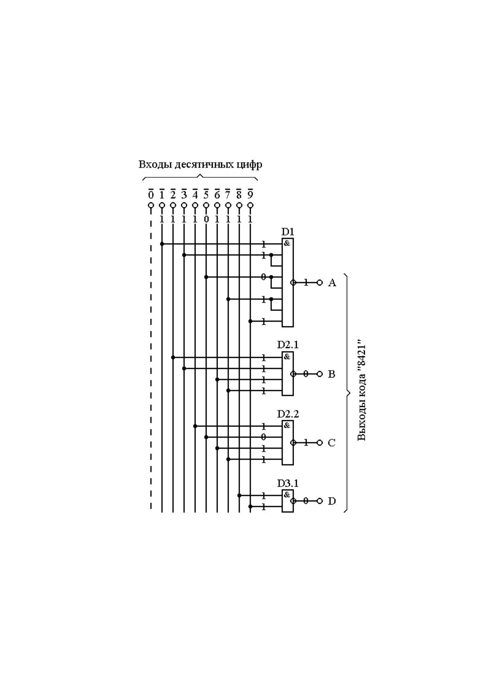
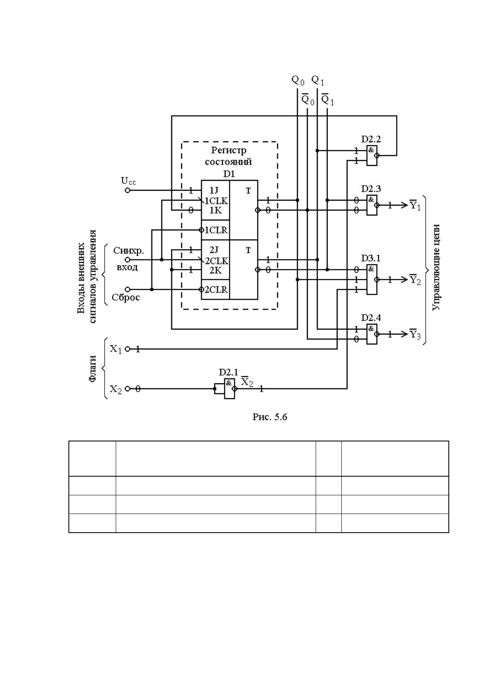

1
МИНИСТЕРСТВО ОБРАЗОВАНИЯ И НАУКИ
РЕСПУБЛИКИ КАЗАХСТАН
АЛМАТИНСКИЙ КОЛЛЕДЖ СВЯЗИ
ПРИ КАЗАХСКО – АМЕРИКАНСКОМ УНИВЕРСИТЕТЕ
Аяшова А.М.
СБОРНИК
АКТИВНОГО РАЗДАТОЧНОГО МАТЕРИАЛА
ПО ДИСЦИПЛИНЕ
«ЦИФРОВЫЕ УСТРОЙСТВА И
МИКРОПРОЦЕССОРНЫЕ СИСТЕМЫ»
ДЛЯ УЧАЩИХСЯ СПЕЦИАЛЬНОСТЕЙ:
«Вычислительная техника и программное
обеспечение»
2
СДНФ=Х1*X2*X3+ Х1*X2*X3+ Х1*X2*X3+ Х1*X2*X3
С
Список принятых сокращений и терминологии:
1. СРС – самостоятельная работа студентов;
2. СРСП - самостоятельная работа студентов с преподавателем;
3. ЦУ – цифровые устройства;
4. ТИ – таблица истинности;
5. УУ – устройство управления;
6. ИМС – интегральные микросхемы;
7. Л. – литература;
8. КЦУ – комбинационные цифровые устройства;
9. ИТ – интегральные триггеры;
10.МП – микропроцессор;
11.ЗУ – запоминающие устройства.
Х
1
Х
2
Х
3
Y
1
0
0
0
1
0
0
1
1
0
1
0
0
0
1
1
0
1
0
0
1
1
0
1
0
1
1
0
0
1
1
1
1
3
Внимание: пустые графы глоссария заполняются учащимися
самостоятельно до конца курса обучения.
ЛЕКЦИЯ 1.
Введение. Основные определения Основы цифровой техники.
В современных цифровых устройствах (ЦУ) мы имеем дело лишь с
двумя видами сигналов: логического 0 и логической 1. Эти цифровые
сигналы обычно представляются в потенциальной форме с положительной
логикой сигналов, когда сигналу логического 0 соответствует положительное
постоянное напряжение низкого уровня, а сигналу логической 1 –
положительное постоянное напряжение более высокого уровня.
Любая информация в ЦУ может быть представлена совокупностью
определенного количества сигналов логического 0 и логической 1.
Комбинация цифровых сигналов, несущая какую-либо информацию,
называется кодовым словом или просто кодом.
Устройства, предназначенные для передачи, приема и обработки
цифровой информации (то есть информации, выраженной кодовыми
словами), называются цифровыми устройствами.
Общие сведения о логических элементах.
4
Любые узлы цифровой аппаратуры строятся с помощью устройств,
которые называются логическими элементами. В основном применяются
лишь 5 логических элементов, общие сведения о которых приведены в
табл.1.1.
Входы элементов всегда изображаются слева. Сигналы, которые
подаются на входы, называются логическими переменными или
логическими аргументами и обозначаются обычно буквами "Х" с
нумерацией: Х
1
, Х
2
, Х
3
и т.д.
Выходы элементов всегда изображаются справа. Сигналы, которые
формируются на выходах, называются логическими функциями и
обозначаются обычно буквами "Y" или f(X).
Табл. 1
Названия
элементов
Условное
графическо
е
изображени
е
Выполняемы
е операции
Символи-
ческая
запись
операции
Таблица
истинности
Элемент НЕ
(инвертор)
Логическое
отрицание
(инверсия,
операция НЕ)
ЛН
X
Y
0
1
1
0
Элемент И
(конъюнктор
)
Логическое
умножение
(конъюнкция,
операция И)
ЛИ
0
0
0
0
1
0
1
0
0
1
1
1
Элемент
ИЛИ
(дизъюнктор)
Логическое
сложение
(дизъюнкция,
операция
ИЛИ)
ЛЛ
0
0
0
0
1
1
1
0
1
1
1
1
Элемент
И-НЕ
(элемент
Шеффера)
Логическое
умножение с
последующим
отрицанием
(операция
ЛА
0
0
1
0
1
1
1
0
1
1
X
2
X
Y
1
X
2
X
Y
XY
21
XXY
21
XX
1
X
2
X
Y
21
XXY
21
XXY
21
X/X
5
И-НЕ, штрих
Шеффера)
1
1
0
Элемент
ИЛИ-НЕ
(элемент
Пирса)
Логическое
сложение с
последующим
отрицанием
(операция
ИЛИ-НЕ,
стрелка Пирса
ЛЕ
0
0
1
0
1
0
1
0
0
1
1
0
Таблица, полностью описывающая работу логического элемента
или любого другого ЦУ, называется таблицей истинности.
Основные требования "европейского" стандарта, которые нужно
соблюдать при построении схем ЦУ на логических элементах:
1. Изображение любого элемента должно представлять собой
прямоугольник. Его размеры зависят от количества входов и выходов (см.
пункты 2 и 3).
2. Расстояние "а" между двумя соседними выводами любых
элементов (рис.1.5) должно быть кратным 5 мм (реально – ровно 5 мм) и
одинаковым у всех элементов данной схемы.
3. Расстояние между последним выводом и краем элемента (рис.1.5)
должно составлять величину "а/2" или кратное ей (практически именно
"а/2").
4.
5. Ширина элемента зависит от количества знаков внутреннего
обозначения и должна быть кратной 5 мм (в логических элементах
практически именно 5 мм).
1
X
2
X
Y
21
XXY
21
XX
6
6. Расстояние между любыми другими линиями в схеме должно
быть не менее 3 мм.
ИМС логических элементов.
Рис.1.6
У микросхем логических элементов третья часть маркировки начинается с
буквы Л, а вторая буква показывает, какие конкретно логические элементы
содержит данная ИМС:
ЛН – элементы НЕ. Например, микросхема КР1533ЛН1 (рис.1.6а),
содержащая 6 элементов НЕ.
Рис.1.7
ЛИ – элементы И. Например, микросхемы: КР1533ЛИ1 (рис.1.6b),
содержащая 4 элемента И с двумя входами у каждого (говорится и
пишется – 4 элемента 2И); КР1533ЛИ3 (рис.1.6с), содержащая 3 элемента
3И); КР1533ЛИ6 (рис.1.6d), содержащая 2 элемента 4И.
ЛЛ – элементы ИЛИ. Например, микросхема КР1533ЛЛ1 (рис. 1.7а),
содержащая 4 элемента 2ИЛИ.
7
ЛА – элементы И-НЕ. Например, микросхемы: КР1533ЛА1 (рис.1.7b),
содержащая 2 элемента 4И-НЕ; КР1533ЛА2 (рис.1.7c), содержащая 1
элемент 8И-НЕ; КР1533ЛА3 (рис.1.7d), содержащая 4 элемента 2И-НЕ;
КР1533ЛА4 (рис.1.8а), содержащая 3 элемента 3И-НЕ.
Рис.1.8
ЛЕ – элементы ИЛИ-НЕ. Например, микросхемы: КР1533ЛЕ1 (рис.1.8b),
содержащая 4 элемента 2ИЛИ-НЕ; КР1533ЛЕ4 (рис.1.8с), содержащая 3
элемента 3ИЛИ-НЕ; КР531ЛЕ7 (рис.1.8d), содержащая 2 элемента 5ИЛИ-
НЕ.
Контрольные вопросы:
1. Физический смысл сигналов логического 0 и логической 1.
2. Что такое код?
3. Понятия логической переменной и логической функции.
4. Расшифровать маркировку заданной микросхемы. КП15333ЛН7
5. Какую структуру могут иметь микросхемы цифровых устройств?
Ответить на следующие тестовые вопросы:
1. Привести условное графическое изображение логического элемента
ИЛИ-НЕ.
8
А) 1 В) 2 С) 3 D) 4
2. Какую операцию выполняет элемент И-НЕ?
A) Логическое умножение.
B) Логическое сложение с последующим отрицанием полученного
результата.
C) Логическое отрицание.
D) Логическое умножение с последующим отрицанием полученного
результата.
3. Привести символическую запись операции логического сложения.
A) Y = X; B) Y = X
1
\/X
2
; C) Y = X
1
∙X
2
; D) Y = X
1
X
2
;
4. Что показывает в маркировке микросхемы КР555ЛА6 первая буква
К?
A) Корпус микросхемы пластмассовый.
B) Микросхема ТТЛШ-структуры.
C) Микросхема содержит логические элементы И-НЕ.
D) Микросхема широкого применения..
5. Какие две буквы стоят в маркировке микросхем, содержащих
элементы И-НЕ?
A) ЛН.
B) ЛА.
C) ЛЛ.
D) ЛИ.
The glossary
Қазақша
Орысша
Ағылшынша
кіріс
input
выход
output
Кодалық сөз
code, word
логический 0
logic 0 (zero)
логическая 1
logic 1 (one)
высокий уровень
high level
низкий уровень
low level
цифровое устройство
digital device
9
Задание для СРС
1. Интегральные микросхемы (ИМС). Маркировка ИМС. Л.1, стр.9
2. Основные параметры и особенности микросхем различных структур.Л.1,
стр.13
Задание для СРСП:
По заданной схеме выполнить анализ работы логических элементов.
ЛЕКЦИЯ 2. Синтез КЦУ
Формы записи логических функций.
Предположим, задана таблица истинности (табл.2.1), описывающая
работу ЦУ, которое имеет три входа , , и один выход .
Цель: с помощью логических элементов построить схему, которая
будет работать так, как указано в этой таблице.
1. СДНФ (совершенная дизъюнктивная нормальная форма)
представляет собой несколько многочленов (минтермов), объединенных
операцией логического сложения (дизъюнкции), почему форма и названа
дизъюнктивной. Она составляется для значений функции Y, равных 1,
количество которых и определяет число многочленов. Каждый многочлен
представляет собой логическое умножение всех переменных (в данном
случае – трех переменных , , ), причем для нулевого значения
любой переменной следует брать ее инверсию.
Запишем СДНФ для заданной логической функции :
Табл.2.1
Приведем порядок минимизации:
1. Чертим карту Вейча с нужным количеством клеток.
2. Клетки карты, соответствующие минтермам СДНФ обозначаем
символом "1".
3. Объединяем все клетки с " 1 ". Количество клеток в каждом
объединении должно быть максимальным, а самих областей объединения
должно быть как можно меньше.
Подбор микросхем, построение и анализ работы схем ЦУ в базисе
И,ИЛИ,НЕ.
Оценка качества схем.
Порядок выполнения операций должен быть следующим:
1
X
1
X
2
X
3
X
1
Y
2
X
3
X
1
Y
3213213213211
XXXXXXXXXXXXY
10
1. Логическое отрицание входных сигналов Х, то есть первыми в схеме
должны стоять элементы НЕ.
2. Логическое умножение (элементы И).
3. Логическое сложение (элементы ИЛИ).
Любая реальная схема дополняется сведениями о всех используемых здесь
микросхемах, любых других элементах и устройствах в виде специальной
таблицы, которая имеет официальное название "Перечень элементов"
(табл.2.2). По стандарту указанная таблица должна помещаться либо на
поле чертежа, либо после него.
Табл.2.2
Поз.
обозн
ачени
е
Наименование
Кол.
Примечание
D1
КР1533ЛН1
1
3 элемента не
используются
D2
КР1533ЛИ3
1
2 элем. не использ.
D3
КР1533ЛИ1
1
2 элем. не использ.
D4
КР1533ЛЛ1
1
2 элем. не использ.
Ответить на тестовый вопрос:
Задана таблица истинности КЦУ (табл.1). Записать СДНФ.
Табл.1
Х
1
Х
2
Х
3
Y
0
0
0
1
0
0
1
1
0
1
0
0
0
1
1
1
1
0
0
1
1
0
1
0
1
1
0
1
1
1
1
0
_ _ _ _ _ _ _ _ _
A) Y = X
1
∙X
2
∙X
3
\/ X
1
∙X
2
∙X
3
\/ X
1
∙X
2
∙X
3
\/ X
1
∙X
2
∙X
3
\/ X
1
∙X
2
∙X
3
.
_ _ _ _ _ _ _ _
B) Y = X
1
∙X
2
∙X
3
\/ X
1
∙X
2
∙X
3
\/ X
1
∙X
2
∙X
3
\/ X
1
∙X
2
∙X
3
_ _ _ _ _ _
C) Y = (X
1
\/ X
2
\/ X
3
)
∙ ( X
1
\/ X
2
\/ X
3
) ∙ (X
1
\/ X
2
\/ X
3
).
_ _ _ _ _ _ _ _
11
D) Y = X
1
∙X
2
∙X
3
\/ X
1
∙X
2
∙X
3
\/ X
1
∙X
2
∙X
3
\/ X
1
∙X
2
∙X
3
\/ X
1
∙X
2
∙X
3
.
The glossary
Қазақша
Орысша
Ағылшынша
метод Вейча
Veitch method
минимизациялау
minimization
Картаны сызу
to make a map
логическое выражение
logic expression
аналогично
analogously
Задание для СРС
1. Формы записи логических функций. СДНФ.СКНФ. Л.1, стр.18
2. Минимизация логический функций методом карт Вейча.Л.1, стр.20
Задание для СРСП
По заданной таблице выполнить синтез и анализ работы КЦУ в базисе
И,ИЛИ,НЕ.
ЛЕКЦИЯ 3. Шифраторы. Дешифраторы.
Шифратор или кодер (coder или encoder) – это ЦУ, выполняющее
двоичное кодирование числовой информации, то есть преобразование
десятичных чисел в кодовые слова.
Любой шифратор имеет входы для нужных десятичных чисел и
выходы для соответствующего кодового слова.
В виде микросхем в основном выпускаются шифраторы двух видов:
1. Шифраторы 10х4 (10 входов и 4
выхода) для преобразования любых десятичных
чисел в двоично-десятичный код "8421". Так как
десятичные числа могут содержать цифры от 0
до 9, то такие шифраторы должны иметь десять
входов для указанных цифр. Код "8421"
четырехразрядный (см. табл. 3.2), поэтому
шифраторы будут иметь 4 выхода для данного
кода. В качестве примера можно привести
микросхему К555ИВ3 (рис. 3.3), аналогом
которой является микросхема SN74LS147N
фирмы "Texas Instruments, где выходы для кода "8421" обозначены A, B, C,
D.
Применяются они преимущественно при вводе цифровой информации с
помощью клавиатуры.
12
2. Шифраторы 8х3, выполняющие преобразование первых восьми
десятичных чисел от 0 до 7 в трехразрядный двоичный код (см. пункт 3 в §
3.1). Используются они в основном для управления работой других ЦУ. Для
примера рассмотрим микросхему К555ИВ1
(рис. 3.4), аналогом которой является
микросхема SN74LS148N фирмы "Texas
Instruments". Она имеет восемь входов для
цифр 0…7 и три выхода А0, А1, А2 для
трехразрядного двоичного кода.
Микросхема К555ИВ1, как и
подавляющее большинство других ИМС
цифровых устройств, кроме основных
выводов (в данном случае входов для
десятичных цифр и выходов для кода)
имеет разрешающий вход (см. окончание §
2.10) EI (enable input). Шифратор будет
срабатывать только в том случае, если на вход EI подать активный
разрешающий сигнал. Если же на входе EI установить пассивный уровень
сигнала, то и на всех выходах также будут устанавливаться пассивные
сигналы.
И, наконец, микросхема имеет два дополнительных вывода, назначение
которых выясним по справочной литературе:
ЕО (enable output) – разрешение по выходу. Здесь формируется сигнал
0 только при наличии разрешения и пассивных сигналах на входах всех
цифр.
GS (group signal) – групповой сигнал. На этом выходе формируется
сигнал 1 только при отсутствии разрешения или при его наличии и
пассивных сигналах на входах всех цифр.
Синтез и анализ работы шифраторов
на микросхемах логических элементов.
13
Рассмотрим для примера построение шифратора, выполняющего
преобразование десятичных чисел в двоично-десятичный код "8421".
1. Определяем количество и назначение входов и выходов:
Такой шифратор будет иметь десять входов для всех десятичных цифр
0…9 и 4 выхода для четырехразрядного кода "8421".
2. Строим таблицу истинности шифратора (табл. 3.5). В этой
таблице укажем значения кода "8421" для каждой десятичной цифры,
пользуясь таблицей 3.2. Обозначение выходов для кода делаем такое же, как
и в микросхеме КР1533ИВ3.
Входы
десятичных цифр
Выходы
кода "8421"
Х
D
C
B
A
0
0
0
0
0
1
0
0
0
1
2
0
0
1
0
3
0
0
1
1
4
0
1
0
0
5
0
1
0
1
6
0
1
1
0
7
0
1
1
1
8
1
0
0
0
9
1
0
0
1
3. Для каждого выхода шифратора записываем СДНФ:
.
.
.
.
4. Переходим к базису И-НЕ и определяем требуемое количество
логических элементов:
.
1 элемент 5И-НЕ.
97531
XXXXXA
7632
XXXXB
7654
XXXXC
98
XXD
975319753197531
X/X/X/X/XXXXXXXXXXXA
14
. 1 элемент 4И-НЕ.
. 1 элемент 4И-НЕ.
. 1 элемент 2И-НЕ
Всего для построения схемы шифратора требуются: 1 элемент 5И-НЕ, 2
элемента 4И-НЕ и 1 элемент 2И-НЕ.
5. Подбираем микросхемы: по одной микросхеме КР1533ЛА2 (нет
микросхем, содержащих элементы 5И-НЕ, поэтому вынуждены взять
микросхему с элементом 8И-НЕ - см. пункт 23 из § 2.8), КР1533ЛА1 и
КР1533ЛА3.
6. Строим схему шифратора в базисе И-НЕ (рис. 3.6).
7. Составляем перечень элементов к данной схеме:
Табл.
Поз.
обозн
ачени
е
Наименование
Кол.
Примечание
D1
КР1533ЛА2
1
D2
КР1533ЛА1
1
D3
КР1533ЛА3
1
3 элем. не
использ.
8. Выполним анализ работы шифратора в статическом режиме для
преобразования какой-либо одной десятичной цифры.
9. Предположим, что шифратор должен закодировать (преобразовать в
код) цифру 5. Для этого подадим активный сигнал 0 (здесь активным
сигналом является 0, так как все входы инверсные) на вход этой цифры 5. На
входах всех остальных цифр (шифратор не приоритетный) установим
пассивные уровни логической 1. По схеме определяем, что на выходах
формируется код 0101 (напомним: кодовые слова на выводах следует читать
снизу вверх). Сравниваем полученный результат с таблицей истинности и
делаем вывод: преобразование цифры 5 шифратор выполнил правильно. Для
напоминания: полный анализ работы требует проверки всех вариантов, то
есть в данном случае проверки правильности кодирования всех цифр.
Контрольные вопросы:
7632
X/X/X/XB
7654
X/X/X/XC
98
X/XD

15
1. Чем в принципе отличаются двоичные и двоично-десятичные коды?
2. Какие сигналы называются активными, а какие – пассивными?
3. Какие функции выполняют шифраторы?
4. Какие функции выполняют дешифраторы?
Ответить на тестовые вопросы:
1. Какой сигнал называется активным?
A) Логический 0.
B) Его подача на вход цифрового устройства не может привести к
срабатыванию этого устройства.
C) Сигнал повышенной мощности.
16
D) Его подача на вход цифрового устройства может привести к
срабатыванию этого устройства.
2. Что такое шифратор?
A) Коммутирующее устройство, способное подключать любой из своих
информационных входов к выходу.
B) Устройство, выполняющее сравнение двух двоичных кодов.
C) Устройство, выполняющее вычитание двух двоичных кодов.
D) Кодирующее устройство, выполняющее преобразование десятичных
чисел в кодовые слова.
3. Задано изображение цифрового устройства.
Какой сигнал является активным для входа Е1 и почему?
A) Логическая 1, т.к. вход Е1 прямой.
B) Логическая 1, т.к. вход Е1 разрешающий.
C) Логический 0, т.к. вход Е1 инверсный.
D) Логический 0, т.к. вход Е1 прямой.
The glossary
Қазақша
Орысша
Ағылшынша
дешифратор
decoder
Тура шығыс
direct output
шифратор
coder, encoder
выход
coder, encoder
кодировать, шифровать
coder, encoder
Задание для СРС
1. Системы счисления. Перевод чисел из одной системы счисления в
другую.Л.1, стр.54
2. Понятия активного и пассивного сигналов. Способы статического
управления.
.Л.1, стр.59.
17
3. Дешифраторы. ИМС дешифраторов. Основные положения, микросхемы,
логическая структура. Л.1,стр.69.
Задание для СРСП
По индивидуальному заданию выполнить синтез и анализ работы
шифратора и дешифратора.
ЛЕКЦИЯ 4-5. Преобразователи кодов. Мультиплексоры и
демультиплексоры.
Преобразователь кодов (code converter) – это цифровое устройство,
выполняющие преобразование одного кода в другой.
В маркировке микросхем преобразователей кодов по стандарту
принято ставить буквы ПР, хотя их иногда относят к группе прочих
преобразователей и маркируют: ПП. Изображение таких устройств содержит
знаки: X/Y.
Одними из наиболее распространенных являются микросхемы
преобразователей из двоично-десятичного кода "8421" в семиразрядный код
управления сегментными цифровыми индикаторами. Для примера
рассмотрим микросхему К555ИД18, изображенную на рис. 3.17 (аналог –
микросхема SN74LS247N фирмы "Texas Instruments".
Эту и аналогичные ей микросхемы других
серий обычно маркируют ИД и обозначают DC в
связи с тем, что работают они всегда в паре с
сегментными цифровыми индикаторами (рис.
3.18). И данная пара в совокупности выполняет
преобразование кода "8421" в десятичные
цифры, которые высвечиваются на индикаторе;
то есть функционирует как дешифратор.
Укажем назначение выводов микросхемы
К555ИД18:
1, 2, 4, 8 – входы для двоично-десятичного
кода "8421".
A, B, C, D, E, F, G – выходы, которые
присоединяются к соответствующим зажигающим входам индикатора.
18
Пример: разработать принципиальную электрическую схему
преобразователя из кода "7421" в код "3а + 2".
1.
Входы кода "7421"
Выходы кода "3а + 2"
Десятичные
цифры
Х
3
Х
2
Х
1
Х
0
Y
4
Y
3
Y
2
Y
1
Y
0
0
0
0
0
0
0
0
0
1
0
1
0
0
0
1
0
0
1
0
1
2
0
0
1
0
0
1
0
0
0
3
0
0
1
1
0
1
0
1
1
4
0
1
0
0
0
1
1
1
0
5
0
1
0
1
1
0
0
0
1
6
0
1
1
0
1
0
1
0
0
7
1
0
0
0
1
0
1
1
1
8
1
0
0
1
1
1
0
1
0
9
1
0
1
0
1
1
1
0
1
2. Для всех комбинаций входного кода записываем многочлены СДНФ:
0. 1.
2. 3.
4. 5.
6. 7.
8.
9.
_
Х
2
Х
2
0123
XXXX
0123
XXXX
0123
XXXX
0123
XXXX
0123
XXXX
0123
XXXX
0123
XXXX
0123
XXXX
0123
XXXX
0123
XXXX
19
_
Х
1
Х
3
Х
1
_
Х
3
Х
1
При наличии в карте 4 угловых клеток их все можно объединить в одну
область.
х х 8 7
х х х 9
6 х 3 2
4 5 1 0
20
1. Для всех выходов преобразователя заполняем карты Вейча.
2. Записываем МДНФ для всех выходов преобразователя и
определяем требуемое количество элементов (подсчет элементов на
данном этапе производится только в том случае, если схема будет
строиться в базисе И, ИЛИ, НЕ).
; 2 эл. 2И + 1 эл. 2ИЛИ.
03030
XXXXY
21
; 3 эл. 2И + 2 эл. 2ИЛИ.
;
1 эл. 2И + 1 эл. 4И + 2 эл. 2ИЛИ.
;
1 эл. 2И + 1 эл. 3И + 2 эл. 2ИЛИ.
; 2 эл. 2И + 2 эл. 2ИЛИ.
+ 4 эл. НЕ для отрицания и .
Всего: 4 элемента НЕ; 1 элемент 4И;
9 элементов 2И; 9 элементов 2ИЛИ.
1 элемент 3И;
3. Подбираем микросхемы: КР1533ЛН1 – 1шт., КР1533ЛИ1 – 3шт.,
КР1533ЛИ3 – 1шт., КР1533ЛИ6 – 1шт., КР1533ЛЛ1 – 3шт.
4. Строим схему преобразователя кодов в базисе И, ИЛИ, НЕ.
5. Составляем перечень элементов к этой схеме:
Поз.
обозн
ачени
е
Наименование
К
ол
.
Примечание
D1
КР1533ЛН1
1
2 элем. не
использ.
D2,D3
КР1533ЛИ1
2
D4
КР1533ЛИ6
1
1 элем. не
использ.
D5
КР1533ЛИ3
1
1 элем. не
использ.
D6
КР1533ЛИ1
1
3 элем. не
использ.
D7…
D9
КР1533ЛЛ1
3
3 эл. из D9 не
исп.
6. Выполняем анализ работы преобразователя кодов в статическом
режиме для преобразования какого-либо одного кода..
На входы преобразователя подаем код 1000 (согласно табл. 3.9 – это
цифра 7 в коде "7421"). По схеме определяем, что на выходах в данном
0101031
XXXXXXY
012302032
XXXXXXXXY
01212033
XXXXXXXY
021234
XXXXXY
210
X,X,X
3
X
22
случае формируется код 10111. Полученный результат проверяем по таблице
истинности (табл. 3.9) – это тоже цифра 7, но уже в коде "3а + 2".
Контрольные вопросы:
23
1. Какую функцию выполняет преобразователь?
2.ИМС преобразователей кодов.
3. Область применения преобразователей кодов.
The glossary
Қазақша
Орысша
Ағылшынша
Бақылау коды
control code
принципиальная схема
schematic circuit,
Код түрлендіргіш
code converter
табличная функция
table function
буквенный индикатор
alphabet indicator
Задание для СРС
1. Мультиплексор. Основные положения, микросхемы, логическая структура.
Принцип построения цифровых коммутаторов с заданным числом входов и
выходов на мультиплексорах.Л.1, стр.80.
2. Демультиплексор. Основные положения, микросхемы, логическая
структура. Принцип построения цифровых коммутаторов с заданным числом
входов и выходов на демультиплексорах.Л.1, стр.87.
3. Как выполняется переход от базиса И, ИЛИ, НЕ к базису И-НЕ?
Задание для СРСП
Разработать принципиальную электрическую схему преобразователя,
выполняющего преобразование одного заданного кода в другой. Выполнить
анализ его работы в статическом режиме для преобразования любого кода.
ЛЕКЦИЯ 6. Сумматоры. Цифровые компараторы. Арифметическо-
логические устройства (АЛУ).
Двоичные сумматоры (binary adder) – это цифровые устройства,
выполняющие арифметическое сложение двух двоичных кодов (чисел). В
дальнейшем мы их будем называть просто сумматорами. Они имеют как
самостоятельное значение, так и входят составной частью в микросхемы
АЛУ.
Арифметическое сложение в одном отдельно взятом разряде реализует
цифровое устройство, которое называется одноразрядным сумматором
(рис. 3.50).
24
Так как в указанном (да и в любом другом)
разряде здесь выполняется арифметическое
сложение трех цифр:
А – цифра первого слагаемого А,
В – цифра первого слагаемого В,
Р – цифра переноса из предыдущего
разряда,
то одноразрядный сумматор должен иметь три соответствующие входа.
В результате этого сложения формируются две цифры:
S – цифра суммы,
Р' – цифра переноса в следующий разряд,
поэтому одноразрядный сумматор имеет два соответствующие выхода.
Субтракторы (от английского subtract – вычитать) - это цифровые
устройства, выполняющие вычитание двух двоичных кодов (чисел).
Это действие в цифровых системах производится путем
арифметического сложения двоичных чисел,
где вычитаемое представляется
дополнительным кодом, который
формируется инвертированием всех цифр
числа с последующим прибавлением
единицы.
Компаратор (от английского compare
– сравнивать) - это устройство, которое в
цифровой технике выполняет сравнение по
величине двух двоичных кодов А и В. При
этом может получаться один из трех
возможных результатов: А > В, А = В и А <
В. Соответственно компаратор имеет три
указанных выхода, и появление активного
сигнала на каком-либо одном выходе
указывает на результат сравнения.
АЛУ (ALU - arithmetic and logic unit) –
это многофункциональное цифровое
устройство, выполняющее определенный
набор арифметических, логических и
комбинированных операций. Содержит все
необходимые для этого элементы и устройства, с которыми мы уже знакомы.
Контрольные вопросы:
1. Какие функции выполняют субтракторы, цифровые компараторы и схемы
контроля четности?
2.Что такое АЛУ? Перечислить операции, которые способны выполнять
АЛУ.
25
3. В чем заключается принцип обнаружения ошибок при передаче и
хранении информации с помощью схем контроля четности?
4. На каком принципе основан метод обнаружения и исправления
ошибок при передаче и хранении информации с помощью узлов
мажоритарного контроля?
The glossary
Қазақша
Орысша
Ағылшынша
алгоритм
algorithm
АЛУ (арифметико-
логическое устройство)
ALU (arithmetic
and logic unit)
қосылғыш
summand
арифметикалық қосу
arithmetic addition
сумматор
summator
вычитающее устройство -
subtractor
Задание для СРС
1. Схемы контроля четности. Микросхемы контроля четности: принцип
работы, логическая структура.
Л.1, стр.108.
2. Обнаружение ошибок при передаче и хранении информации с помощью
контроля четности. Л.1, стр.110.
3. Узлы мажоритарного контроля. Л.1, стр.111.
Задание для СРСП
Задаются микросхемы цифрового компаратора, контроля четности и АЛУ.
- Пояснить назначение всех выводов этих микросхем.
- Указать значения сигналов на всех входах и выходах микросхемы
цифрового компаратора при сравнении двух заданных кодов.
- На всех входах и выходах микросхемы контроля четности указать
значения сигналов при проверке на четность двух заданных кодовых слов.
26
ЛЕКЦИЯ 7-8. РАЗДЕЛ 3. Последовательностные цифровые устройства.
Интегральные триггеры.
Основой структуры любых последовательностных ЦУ являются
элементы памяти, получившие название интегральных триггеров.
Любой интегральный триггер – это простейший элемент памяти,
способный запомнить и сохранить 1 бит информации: один 0 или одну 1
(термин "бит" произошел от английского binary digit – двоичный разряд,
знак, цифра). Соответственно имеет два устойчивых состояния: 0 и 1. В
одном состоянии на прямом выходе (см. ниже) триггера удерживается 0, в
другом – 1 даже при сбросе активных сигналов на всех его входах. Любой
интегральный триггер имеет два комплементарных выхода (см. рис. 4.1):
прямой и инверсный .
Интегральные триггеры могут иметь
входы следующего назначения:
R (reset), K – входы сброса (в ноль).
При подаче активного сигнала на такой
вход триггер устанавливается в
состояние 0, то есть на его прямом
выходе устанавливается уровень
логического 0.
S (set), J – входы установки (единицы).
При подаче активного сигнала на такой вход триггер устанавливается в
состояние 1, то есть на его прямом выходе устанавливается уровень
логической 1.
D (data) – информационный вход. На прямом выходе
триггера устанавливается такой же сигнал, какой подается
на вход D.
Т (complementing) – счетный вход. При подаче активного сигнала на такой
вход триггер переключается в другое состояние, то есть тот уровень
сигнала, который удерживался на выходе триггера в предыдущий момент
времени, меняется на противоположный.
С или CLK (clock) – синхронизирующий вход. Подача активного сигнала
на такой вход дает разрешение на срабатывание триггера, причем жестко
определяя момент срабатывания . Триггеры, имеющие вход С,
называются синхронными, не имеющие такого входа – асинхронными.
Асинхронные триггеры практически встречаются редко.
Управление интегральными триггерами.
Q
Q
27
По способу управления входы интегральных триггеров могут быть
статическими и динамическими, для которых активным сигналом является
импульс (точнее, фронт импульса, то есть перепад напряжения на входе с
уровня логического 0 до уровня логической 1 или наоборот).
Динамические входы могут быть:
1. Прямые динамические, для которых активным сигналом является
положительный перепад напряжения (передний фронт положительного
импульса) от уровня логического 0 до уровня логической 1 в момент t
1
(см.
рис. 4.2а). В технической и справочной литературе такой активный сигнал
принято обозначать: _|¯ , ↑ или Р (positive-going edge - положительный
перепад).
Три допустимых стандартом изображения этих входов приведено на
рис. 4.2b.
2. Инверсные динамические, для которых активным сигналом
является отрицательный перепад напряжения (задний фронт
положительного импульса) от уровня логической 1 до уровня логического 0 в
момент t
1
(см. рис. 4.3а). В технической и справочной литературе такой
активный сигнал принято обозначать: ¯|_ , ↓ или N (negative edge -
отрицательный перепад) - Три допустимых стандартом изображения этих
входов приведено на рис. 4.3b.
Динамическими, как правило, делают синхронизирующие входы С. В
этом случае соответствующий перепад напряжения (перепад логических
уровней) на таком входе дает разрешение на срабатывание триггера, а момент
перепада t
1
жестко определяет момент срабатывания триггера.
28
§ 4.3. Структура и особенности работы
интегральных триггеров.
7. RS-триггеры.
Структура такого асинхронного RS-триггера с прямыми статическими
входами приведена на рис. 4.1, а условное графическое изображение – на рис.
4.4.
Выполним в качестве примера анализ работы
указанного триггера хотя бы для одного случая.
Анализ работы любого устройства
последовательностного типа, в отличие от
комбинационных ЦУ, имеет одну особенность: в
первую очередь нужно знать, какие сигналы
удерживались (сохранялись) на выходах устройства в предшествующий
анализу момент времени (в предыдущем тактовом интервале), а уже
затем следует подавать сигналы на входы.
Предположим, что триггер находится в состоянии 0.
Тогда на его прямом выходе удерживается уровень
логического 0, а на инверсном – 1, что и покажем на рис. 4.5.
Сигнал 0 с прямого входа будет
действовать на верхний вход элемента
В, а сигнал 1 с инверсного выхода – на
нижний вход элемента А, что тоже
покажем на рис. 4.5.
На входе R обеспечим пассивный
уровень логического 0 (пассивным здесь
будет 0, а активным – 1, так как входы
прямые статические).
Подадим на вход S активный
сигнал 1. При этом сразу же
срабатывает элемент В, на выходе
которого устанавливается уровень
логического 0 вместо бывшей ранее 1 (это переключение на рис. 4.5 показано
стрелкой). Этот сигнал 0 с выхода элемента В поступает на нижний вход
элемента А (переключение уровня сигнала на этом входе с 1 до 0 также
показано стрелкой на рис. 4.5), который в свою очередь срабатывает и на его
выходе устанавливается уровень логической 1 вместо бывшего ранее 0 (и
это переключение показано стрелкой на рис. 4.5).
Указанная 1 с выхода элемента А передается на верхний вход элемента
В (на рис. 4.5 изменение уровня сигнала на верхнем входе элемента В с 0 до 1
показано стрелкой), но это уже не приводит к изменению сигнала на выходе
данного элемента: как был ранее 0, так он и останется.
Q
Q
29
В результате на прямом выходе триггера установился уровень
логической 1 (а на инверсном – 0). Причем нетрудно убедиться, что при
снятии активного сигнала 1 со входа S (при установке на входе S пассивного
сигнала 0) ничего не изменится, то есть установленные на выходах уровни
сигналов сохраняются.
Вывод: при подаче на вход S (вход установки) активного сигнала
триггер действительно устанавливается в состояние 1 (на его прямом выходе
устанавливается уровень логической 1), о чем и говорилось в § 4.1.
Поэтому основной особенностью RS-триггеров является
нежелательность (и даже прямой запрет) одновременной подачи активных
сигналов на оба входа, так как, повторяем, в этом случае заранее неизвестно,
какой уровень сигнала установится на выходе.
8. JK-триггеры.
Как правило, выпускаются синхронными с прямыми статическими
входами J и К. Структура и условное графическое изображение приведены на
рис. 4.8.
30
Главная особенность JK-триггеров: здесь, в отличие от RS-триггеров,
допускается одновременная подача активных сигналов на оба входа. В этом
случае при наличии активного разрешающего сигнала на входе С триггер
срабатывает как счетный Т, то есть переключается в другое состояние.
Отсутствие запрещенных комбинаций входных сигналов объясняется
наличием двойной обратной связи (во внутреннем RS-триггере, а также
соединение выходов со входными элементами И) и позволяет отнести такой
триггер к типу универсального.
3. D-триггеры.
Практически всегда выпускаются синхронными со
статическим входом D. Принцип построения и условное
графическое изображение приведены на рис. 4.10.
Путем несложного анализа выясняется, что при наличии разрешения на
входе С подача любого сигнала на вход D приводит к установлению такого же
уровня на выходе Q. Отсюда и следует главная особенность D-триггеров:
для входа D любой (и 0, и 1) сигнал является активным, то есть способным
изменить состояние триггера.
31
4. Т-триггеры.
Специальные микросхемы триггеров практически не выпускаются, так
как в качестве счетных триггеров можно использовать имеющиеся в
широком ассортименте микросхемы синхронных JK- и D-триггеров с
динамическим управлением.
4.1.Применение D-триггера в качестве счетного показано на
рис. 4.11а. Каждому учащемуся несложно убедиться, что здесь каждый
поступающий на вход Т активный сигнал (в данном случае положительный
перепад напряжения, так как вход С прямой динамический) переключает
триггер в противоположное состояние. Существенным недостатком такой
реализации Т-триггера является отсутствие синхронизирующего входа С, то
есть триггер получается неуправляемым. Этот недостаток устраняется при
использовании JK-триггера.
4.2. Применение JK-триггера в качестве счетного показано
на рис. 4.11b. Здесь при наличии активного уровня сигнала на входе Т (в
данном случае 1, так как входы J и К прямые статические) этот сигнал
одновременно действует и на входе J, и на входе К. Поэтому при подаче
активного разрешающего сигнала на вход С (в данном случае отрицательного
перепада напряжения, так как вход С инверсный динамический) триггер
срабатывает как счетный, то есть переключается в другое состояние.
Вход С можно использовать в качестве счетного Т, а объединенные
входы J и К – в качестве разрешающего С, но тогда вход Т будет
динамическим, а вход С – статическим.
§ 4.4. Микросхемы интегральных триггеров.
Интегральные триггеры имеют как самостоятельное значение и
выпускаются в виде отдельных микросхем, так и входят составной частью в
микросхемы других ЦУ. Если интегральные триггеры выпускаются в виде
самостоятельных микросхем, то в третьей группе их маркировки имеют
первую букву Т, а вторая буква указывает вид содержащихся в микросхеме
триггеров: ТР – RS-триггеры; ТВ – JK-триггеры; ТМ – D-триггеры.
Для примера рассмотрим подробно микросхему КР1533ТВ6 (аналог -
микросхема SN74LS107 фирмы "Texas Instruments"), изображенную на рис.
4.15.
32
Микросхема содержит два синхронных (имеющих
вход СLK) JK-триггера с дополнительными
асинхронными входами R для сброса.
П р и м е ч а н и я.
- часто такие асинхронные дополнительные входы
R для сброса (в ноль) обозначаются в микросхемах CLR
от английского clear – очищать;
- иногда микросхемы кроме асинхронного
дополнительного входа R (CLR) имеют еще
дополнительные асинхронные входы установки
(единицы) S, которые в этом случае часто обозначаются
PRE от английского preset – заранее устанавливать,
задавать.
Реальная структура одного такого
триггера приведена на рис. 4.16.
Укажем сначала для напоминания
назначение всех входов:
J – синхронный вход установки
(единицы);
К – синхронный вход сброса (в ноль);
СLK – синхронизирующий вход.
Подача активного сигнала на такой вход
дает разрешение на срабатывание триггера,
при этом жестко определяя момент его
срабатывания. Такой сигнал называется
тактовым сигналом, сигналом
синхронизации или просто
синхросигналом.
CLR – асинхронный вход сброса (в ноль). На рис. 4.15 этот вход
отделен чертой от остальных входов (в том числе от входа СLK). Понятие
асинхронного входа в данном случае заключается в следующем: вход СLK
для него не является разрешающим, то есть при подаче на вход CLR
активного сигнала на выходе триггера устанавливается 0 независимо от
наличия или отсутствия активного сигнала на входе СLK, причем остальные
входы триггера (J, К и СLK) блокируются. Каждый учащийся может
убедиться в этом сам, проанализировав работу триггера по схеме рис. 4.16
для данного случая.
Теперь укажем способы управления для всех входов:
J и К – входы прямые статические, поэтому для них активным
сигналом является 1. Подчеркиваем: для входа J активным сигналом
является 1 не потому, что это вход установки (единицы), а потому что
он прямой статический!

33
CLR – вход инверсный статический, поэтому для него активным
сигналом является 0.
СLK – вход динамический инверсный, поэтому для него активным
сигналом является отрицательный перепад напряжения, дающий не только
разрешение на срабатывание триггера, но и жестко определяющий момент
его срабатывания!
Рассмотрим примеры срабатывания данной микросхемы.
Пример 1. Триггер (один из триггеров микросхемы) находится в
состоянии 1. Указать значения сигналов на входах триггеров, при которых на
его прямом выходе установится 0.
Очевидно, это можно сделать, воспользовавшись либо асинхронным
входом сброса (в ноль) R, либо синхронным входом сброса (в ноль) К.
Разберем оба варианта.
Ответ 1 (рис. 4.17). Если триггер
находится в состоянии 1, то на его прямом
выходе Q удерживается уровень логической
1, а на инверсном - уровень логического
0. Подаем на вход сброса (в ноль) R
активный сигнал 0 (напомним, что здесь
активным сигналом является 0, так как
указанный вход инверсный статический), и
на прямом выходе триггера Q
устанавливается 0 независимо от наличия или отсутствия разрешающего
сигнала на входе С, так как вход R – асинхронный. Входы J, С и К при этом
блокируются, поэтому значения сигналов здесь безразличны.
Ответ 2 (рис. 4.18). Подадим на вход
сброса (в ноль) К активный сигнал 1 (вход
прямой статический). Так как здесь не
требуется установки (единицы), то на входе
установки (единицы) J следует установить
пассивный уровень логического 0. Но в
данном случае на вход J можно подать и
активный сигнал логической 1: при этом
активные сигналы 1 будут одновременно
действовать на входах J и К; и триггер (см.
пункт 4 предыдущего параграфа) будет переключаться в противоположное
состояние, то есть из 1 в 0 (что нам и требуется). После установки нужных
уровней сигналов на входах J и К подаем сигнал разрешения на вход С: так
как этот вход инверсный динамический, то для него активным сигналом
является отрицательный перепад напряжения. На асинхронном входе R
следует установить пассивный уровень логической 1, иначе нужные нам в
данном случае входы К и С (а также вход J) будут блокированы.
Q
34
Контрольные вопросы:
1.Дать определение ИТ.
2.Классификация ИТ.
3.Какие существуют способы управления ИТ?
4. Указать правильную маркировку микросхем RS-триггеров.
1. РУ. 2. ТР. 3. ТМ. 4. ИМ. 5. ИЕ.
The glossary
Қазақша
Орысша
Ағылшынша
D-триггер
D-триггер
D-триггер
JK-триггер
JK-триггер
JK flip-flop
MS-триггер
MS-триггер
MS (master-
slave) flip-flop
Т-триггер
Т-триггер
clock interval
удерживать,
сохранять , не
менять (то же
состояние
удерживать,
сохранять , не
менять (то же
состояние
hold, no change
Задание для СРСП
1. Интегральные триггеры. Использование ИМС интегральных триггеров
в технике связи. Л.1, стр.114-115.
2. MS-триггеры.Л1,стр.115.
ЛЕКЦИЯ 9. Регистры.
Регистр – это цифровое устройство, основным назначением которого
является хранение информации. Любой регистр может хранить информацию
в виде одного кодового слова. Обнаружить регистры можно практически во
всех блоках любой цифровой аппаратуры.
Количество триггеров в регистре определяется разрядностью кодовых
слов, которые должны хранится в данном регистре. Регистры могут работать
в трех основных режимах: ввод (запись, загрузка, прием), хранение и вывод
(выдача) информации. По принципу построения и функционирования
регистры делятся на две основные группы: параллельного и
последовательного действия.
Микросхемы регистров. Временные диаграммы.
Микросхемы регистров имеют в маркировке буквы: ИР. Рассмотрим
для примера микросхему четырехразрядного универсального реверсивного
сдвигающего регистра К555ИР11 (аналог - микросхема SN74LS194N фирмы
"Texas Instruments"), изображенную на рис. 4.24.
35
Укажем назначение выводов:
A, B, C, D – информационные
входы для параллельной записи.
SR, SL – информационные входы
для последовательной записи со
сдвигом вправо (SR) и влево (SL).
CLK – синхронизирующий вход.
CLR – асинхронный вход сброса
(в ноль).
S0, S1 – входы выбора режима
работы (см. табл. 4.2, извлеченную из
справочника).
Табл. 4.2
S1
S0
Режимы работы
0
0
хранение
0
1
последовательный со сдвигом вправо
1
0
последовательный со сдвигом влево
1
1
параллельный
36
QA, QB, QC, QD – выходы.
Внимание! В этой и других подобных
микросхемах установка одного режима
работы с помощью этих сигналов приводит
к автоматическому отключению системой
управления других ее режимов.
Упрощенная логическая структура
данной микросхемы имеет вид,
изображенный на рис. 4.25.
Рассмотрим все возможные режимы
работы микросхемы К555ИР11 на
конкретных примерах.
Пример 1. Указать значения сигналов
на всех выводах микросхемы для
обеспечения сброса (в ноль). Ответ
приведен на рис. 4.26.
Очевидно, что в результате
выполнения указанной операции на всех
выходах Q должны устанавливаться уровни
логического 0. Для этого достаточно подать
активный сигнал 0 на асинхронный вход
сброса CLR. При этом все остальные входы.
Контрольные вопросы:
1. Основное назначение регистра.
2. Какие элементы являются основой структуры любого регистра и
почему?
The glossary
Қазақша
Орысша
Ағылшынша
регистр
register
ниверсальный
регистр
universal register
recording
сақтау режимі
standby mode
информацияны
жазу
recording
37
Задание для СРС
1. Назначение, классификация. Принципы построения и функционирования
регистров параллельного и последовательного действия. Л.1, стр.125.
2. Регистровые файлы. Л.1,стр.125.
Задание для СРСП
Задается микросхема конкретного регистра.
В каких режимах может работать заданный регистр?
Назначение всех входов этого регистра.
В зависимости от типа заданного регистра проставить значения сигналов на
всех его входах и выходах для обеспечения:
- сброса в ноль;
- перехода в Z-состояние.
Указать значения сигналов на всех входах и выходах микросхемы для
параллельной загрузки в регистр заданного кодового слова.
ЛЕКЦИЯ 10-11. Счетчики.
Счетчик – это цифровое устройство, выполняющее подсчет
поступающих на его счетный вход цифровых сигналов (преимущественно
импульсов). Используются они очень широко, в большинстве блоков
цифровой аппаратуры.
Счетчики с параллельным переносом.
Приведем пример.
Разработать схему вычитающего счетчика с коэффициентом счета N =
14. Начальное состояние – 0. Результат подсчета формируется на выходах в
виде обычного двоичного кода. Последний импульс цикла должен
возвращать счетчик в исходное нулевое состояние.
1. Определим назначение основных выводов счетчика, количество и
вид триггеров в счетчике.
По заданию счетчик должен работать только в одном счетном режиме
– вычитания, поэтому и счетный вход у него тоже будет один. Из
соотношения 2
n
≥ N количество триггеров в счетчике n = 4, поэтому счетчик
будет иметь 4 выхода. Выбираем для построения счетчика JK-триггеры.
2. Составляем таблицу истинности счетчика (табл. 4.3):
38
Табл. 4.3
Результат подсчета
в двоичном коде
на выходах
Сигналы на входах
триггеров
Номер
входного
импульса
Десятич-
ными
числами
Q
3
Q
2
Q
1
Q
0
J
3
K
3
J
2
K
2
J
1
K
1
J
0
K
0
1
1 0
1 0
0
0
0
1
x
1
x
0
x
1
x
2
13
1
1
0
1
x
0
x
0
0
x
x
1
3
2 12
2 1
1
0
0
x
0
x
1
1
x
1
x
4
11
1
0
1
1
x
0
0
x
x
0
x
1
5
10
1
0
1
0
x
0
0
x
x
1
1
x
6
9
1
0
0
1
x
0
0
x
0
x
x
1
7
8 14
1
0
0
0
x
1
1
x
1
x
1
x
8
7
0
1
1
1
0
x
x
0
x
0
x
1
9
6
0
1
1
0
0
x
x
0
x
1
1
x
10
5
0
1
0
1
0
x
x
0
0
x
x
1
11
4
0
1
0
0
0
x
x
1
1
x
1
x
12
3
0
0
1
1
0
x
0
x
x
0
x
1
13
2
0
0
1
0
0
x
0
x
x
1
1
x
14
1
0
0
0
1
0
x
0
x
0
x
x
1
Сигналы на входах триггеров определяются по таблицам их
переходов.
Табл. 4.4
Переходы
D
T
J K
S R
0 → 0
0
0
0 x
0 x
0 → 1
1
1
1 x
1 0
1 → 0
0
1
x 1
0 1
1 → 1
1
0
x 0
x 0
3. Определяем порядок заполнения карт Вейча (см. п. 3 из § 3.9).
Для каждой строки табл. 4.3 записываем многочлены СДНФ:
1. 2.
3. 4.
5. 6.
7. 8.
9.
10.
11. 12.
13. 14.
0123
QQQQ
0123
QQQQ
0123
QQQQ
0123
QQQQ
0123
QQQQ
0123
QQQQ
0123
QQQQ
0123
QQQQ
0123
QQQQ
0123
QQQQ
0123
QQQQ
0123
QQQQ
0123
QQQQ
0123
QQQQ
39
и определяем их место в карте Вейча (рис. 4.38).
4. Для входов J и К всех триггеров заполняем карты Вейча и
производим объединение клеток (рис. 4.39).
5. Записываем МДНФ для входов J и К всех триггеров:
. .
. .
.
6. Переходим к базису И-НЕ и определяем требуемое количество
логических элементов.
. .
.
.
1KJ
00
01
QK
1KJ
00
0122
QQKJ
02031
QQQQJ
01222
QQQKJ
01
QK
)Q/Q/()Q/Q()QQ()QQ(QQQQJ
0203020302031
010122
Q/QQQKJ
40
.
7. Определяем общее количество компонентов.
В итоге схема счетчика должна содержать: 4 JK-триггера, 6 элементов
2И-НЕ и 1 элемент 3И-НЕ.
8. Подбираем микросхемы: по две микросхемы КР1533ТВ6,
КР1533ЛА3 и одна микросхема КР1533ЛА4.
9. Строим схему счетчика в базисе И-НЕ (рис. 4.41).
10.Составляем перечень элементов к этой схеме (табл. 4.5):
Табл. 4.5
Поз.
обозна
чение
Наименование
Ко
л.
Примечание
D1,D2
КР1533ТВ6
2
D3
КР1533ЛА3
1
D4
КР1533ЛА4
1
2 элем. не использ.
D5
КР1533ЛА3
1
2 элем. не использ.
02301233
Q/Q/QQQQKJ
41
Примеры работы микросхем счетчиков.
Рассмотрим работу микросхемы КР1533ИЕ9 (аналог - микросхема
SN74ALS160А фирмы "Texas Instruments"), изображенной на рис. 4.43, в
различных режимах. Указанная микросхема представляет собой
суммирующий декадный (с коэффициентом счета N = 10) счетчик с
предустановкой.
Укажем назначение выводов:
CLK – счетный вход.
CLR – асинхронный вход сброса.
В данном счетчике имеется возможность начинать счет импульсов не с
0, а с любого другого числа в пределах его коэффициента счета. Для этого в
счетчике есть специальные информационные входы A,B,C,D
предварительной загрузки (предустановки) кода того числа, с которого
необходимо начинать счет, причем такая загрузка производится при
42
активном уровне сигнала на входе LOAD (загрузка) по синхроимпульсу на
входе CLK.
ENT (enable T - разрешение счета) и ENP (enable P - разрешение
переноса) – входы, используемые лишь при каскадном соединении счетчиков
(см. § 4.13). В режиме счета на этих входах должен поддерживаться уровень
логической 1.
QA,QB,QC,QD – выходы, где формируется результат подсчета
импульсов в двоичном коде.
RCO – выход окончания счета или выход переноса (carry out). Здесь
устанавливается активный уровень при достижении конца счета, когда на
выходах QA,QB,QC,QD появляется код 1001 последнего числа цикла – 9.
Пример 1. Указать значения сигналов на всех выводах микросхемы для
сброса. Ответ приведен на рис. 4.43.
В результате выполнения данной операции на выходах QA,QB,QC,QD
должны установится уровни логического 0. Для этого достаточно на
асинхронный вход сброса CLR подать активный сигнал логического 0. Так
как вход CLR асинхронный и всегда обладает приоритетом, то указанный
сигнал 0 заблокирует все остальные входы, поэтому значения сигналов здесь
будут безразличны. Установленный на выходах QA,QB,QC,QD код 0000 –
это, естественно, не конец счета, поэтому на выходе RCO появляется
пассивный сигнал 0.
Контрольные вопросы:
1.Основное назначение счетчика.
2.Что такое цикл счетчика?
The glossary
43
Қазақша
Орысша
Ағылшынша
счетчик на
триггерах
flip-flop counter
предустановка
presetting
каскадтық қосу
cascade connection
бірлік
unity
ондық
decade
Задание для СРС
1. Изменение цикла микросхем счетчиков Л.1, стр.140
2.Каскадное соединение счетчиков.Л.1, стр.143.
Задание для СРСП
По индивидуальному заданию выполнить синтез и анализ работы счетчика.
ЛЕКЦИЯ 12. Запоминающие устройства.
Запоминающие устройства нам уже встречались. Простейшими ЗУ
являются регистры и регистровые файлы, но они могут хранить сравнительно
небольшое количество информации: любой регистр способен хранить лишь
одно кодовое слово, регистровый файл – несколько кодовых слов, но обычно
в пределах четырех. Если же ставится задача хранения большого количества
информации в виде 8 и более кодовых слов, то используются специальные
микросхемы памяти, которые и получили название: запоминающие
устройства (ЗУ). Основой структуры любого ЗУ являются ячейки, в каждой
из которых хранится одно кодовое слово. Такие микросхемы играют
исключительно важную роль практически в любых блоках цифровой
аппаратуры, поэтому в общем объеме выпуска цифровых ИМС занимают
около 40%.
Укажем систему обозначений и маркировки микросхем ЗУ, имеющихся в
российских стандартах:
Тип ЗУ
Маркиров
ка
микросхем
ы
Обозначение в условном
графическом
изображении
статические ОЗУ
RAM
динамические
ОЗУ
РУ
DRAM
МПЗУ
РЕ
ROM
44
ППЗУ
РР
PROM
РПЗУ ЭС
РТ
EEPROM
РПЗУ УФ
РФ
EPROM
ассоциативные
ЗУ
РА
САМ
Основные параметры ЗУ.
Все параметры, характеризующие работу ЗУ, условно делятся на три
группы: классификационные, статические и динамические. Приведем
некоторые, наиболее важные для пользователя параметры:
1. Классификационные.
N – количество ячеек. Как уже было сказано в предыдущем
параграфе, ячейки являются основой структуры любого ЗУ, и в каждой
ячейке хранится одно кодовое слово.
n – разрядность. Показывает, какое максимальное количество
разрядов может содержать любое кодовое слово, хранящееся в микросхеме
ЗУ.
М – информационная емкость. Определяет максимальное
количество единиц информации, которое способно хранить данное ЗУ. Как
известно (см. § 4.1), единицей измерения количества информации, а,
следовательно, и информационной емкости микросхем ЗУ, является "бит".
Но это очень малая величина, поэтому практически всегда используются
кратные единицы:
1 байт = 8 бит.
1 Кбайт (килобайт) = 2
10
= 1024 байт.
Пример 1. Показать значения сигналов на входах и выходах микросхемы
при записи кодового слова 0100 в ячейку с адресом 1101.
Ответ указан на рис. 4.59а. Адрес нужной ячейки 1101 устанавливается на
адресных входах "А", само кодовое слово 0100 подается на
информационные входы DI. На входе CS устанавливается разрешающий
доступ к ячейкам активный уровень логического 0, на вход
подается определяющий режим записи сигнал 0.
RDWR /
45
Состояния выходов DO различных микросхем ОЗУ в режиме записи могут
быть следующими:
- на всех выходах устанавливаются либо уровни логического 0, либо
уровни логической 1 (из справочных данных);
- кодовое слово, которое подается на информационные входы DI,
устанавливается и на выходах (также по справочным данным);
- микросхемы с тремя состояниями выходов (знак в
изображении) устанавливаются в Z-состояние (на выходах указываются
знаки: Z или R
off
– см. § 1.9).
Так как в данном случае мы как раз рассматриваем микросхему с тремя
состояниями выходов, то она и переходит в Z-состояние.
Пример 2. Показать значения сигналов на входах и выходах микросхемы в
режиме хранения информации.
Ответ показан на рис. 4.59b. Для перехода к режиму хранения достаточно
установить пассивный уровень сигнала 0 на входе CS, который запрет
дешифратор строк и закроет доступ ко всем ячейкам. Запись и считывание
в этом случае будут невозможны, поэтому значения сигналов на остальных
входах (DI, A и ) безразличны.
Состояния выходов DO различных микросхем ОЗУ в режиме хранения
могут быть следующими:
- на всех выходах устанавливаются либо уровни логического 0, либо
уровни логической 1 (из справочных данных);
- микросхемы с тремя состояниями выходов устанавливаются в Z-
состояние.
Так как в данном случае мы как раз рассматриваем микросхему последнего
вида, то она и переходит в Z-состояние.
RDWR /
46
Пример 3. Показать значения сигналов на входах и выходах микросхемы
при считывании кодового слова 0100 из ячейки с адресом 1101.
Ответ показан на рис. 4.60. Адрес
нужной ячейки 1101 подается на
адресные входы "А". На входе CS
устанавливается разрешающий
доступ к ячейкам активный
уровень логического 0, на вход
подается определяющий
режим считывания сигнал 1, и на
выходах DO появляется считанный
из выбранной ячейки код 0100.
Сигнал 0 на входе будет
запрещающим для режима записи,
поэтому значения сигналов на
входах DI безразличны.
Построение ЗУ
заданной емкости и разрядности.
Разрядность и информационная емкость даже самых больших ЗУ иногда
оказывается недостаточной. Это приводит к необходимости использования
нескольких микросхем, определенным образом соединенных между собой.
Целью данного параграфа и является рассмотрения принципа построения
ЗУ большой емкости, составленного из нескольких микросхем. При
постановке подобной задачи обычно задается требуемые информационная
емкость и разрядность, а также оговаривается элементная база.
Рассмотрим конкретный пример: построить статическое ОЗУ емкостью 32
Кбайта для хранения 16-разрядных кодовых слов на микросхемах
КР537РУ8 (аналог – микросхема HM6516 фирмы Harris Semiconductor).
Дано: Требуемая информационная емкость Кбайт =
бит.
Требуемая разрядность: .
Параметры одной микросхемы КР537РУ8 (из
справочника): информационная емкость Кбайт бит;
разрядность . Если в справочнике не указано количество ячеек N, то
из знакомого нам соотношения его можно определить:
.
RDWR /
RDWR /
32М
Т
8232
10
32n
T
2M
822
10
8n
nNM
2048
8
822
n
M
N
10
47
Р е ш е н и е :
1. Для обеспечения требуемой разрядности микросхемы соединяются
в линейки. Определим количество микросхем в каждой линейке:
.
В одной микросхеме каждой линейки будет хранится первая половина (8
разрядов) любого кодового слова, в другой – вторая половина (тоже 8
разрядов).
2. Общее количество микросхем:
.
3. Количество линеек:
.
4. Для управления этими линейками в общую схему ЗУ придется
ввести дополнительное ЦУ – дешифратор линеек. Он будет иметь 8
выходов по количеству линеек, а количество входов из соотношения
получается равным .
На входы Будет подаваться трехразрядный код нужной линейки, в
которую производится запись или из которой идет считывание.
2
8
16
n
n
m
T
1
16
822
8232
M
M
m
10
10
T
8
2
16
m
m
m
1
2
2
A
2
A
m2
2
3A
2
2
A

48
49
Информационные входы DI микросхем одной линейки выводятся
раздельно, так как в каждой микросхеме хранится только часть кодового
слова (в данном случае - половина). А информационные входы микросхем
разных линеек соединяются вместе, поскольку дешифратор все равно
включит только одну линейку. Аналогично организуются и
информационные выходы DO.
Контрольные вопросы:
1.Назначение ЗУ.
2.Общие понятия и классификация ЗУ.
The glossary
Қазақша
Орысша
Ағылшынша
буфер данных
data buffer
буферное
устройство
buffer unit
вход выбора
режима работы
(чтение/запись) -
WR/RD (write/read)
Задание для СРС
1. ПЗУ и статические ОЗУ. Л.1, стр.149-152.
2.Работа микросхем адресных ОЗУ.Л.1, стр.153.
Задание для СРСП:
По индивидуальному заданию выполнить синтез и анализ работы ЗУ
заданной емкости и разрядности.
ЛЕКЦИЯ 13-14. Системы управления.
При разработке систем управления используются два принципиально
разных подхода:
1. Принцип схемной (жесткой) логики. Здесь в процессе
проектирования подбираются микросхемы и разрабатывается такая схема их
соединения, которая обеспечивает функционирование системы для
управления каким-то одним, строго определенным процессом (или
несколькими, но, как правило, не очень сложными), происходящим в
аппаратуре. Например, для автоматического выбора диапазонов и
настройкой на заданные частоты в радио- и телеприемниках, запоминания
номеров наиболее часто вызываемых абонентов и организацией повторных
вызовов в телефонных аппаратах и т.д.
50
2. Принцип программируемой логики. В этом случае с помощью
одной или нескольких БИС строится универсальное устройство, способное
решать множество самых разнообразных задач по комплексному управлению
работой аппаратуры. По своему основному узлу – микропроцессору (МП) –
такие УУ обычно называют микропроцессорными системами управления
(МПС). Например, МПС сейчас используются для управления работой целых
АТС (электронных и квазиэлектронных), усилительных подстанций и
радиорелейных станций, кабельных и радиорелейных магистралей и т.д.
Любое УУ связано с аппаратурой, для управления которой оно и
предназначено, в основном двумя группами цепей (рис. 5.1):
1. Управляющие цепи , , , … , , идущие от УУ к
аппаратуре. Появление активного сигнала в одной управляющей цепи "Y"
вызывает срабатывание соответствующего ЦУ в аппаратуре, выполняющего
нужную микрооперацию (МО), которую разделить на более простые
действия невозможно. Активный сигнал на любом управляющем выходе Y
может одновременно поступать на два или более цифровых устройства в
аппаратуре и вызывать их одновременное срабатывание. Такая совокупность
активных сигналов с какого-либо выхода Y управляющего устройства, под
действием которых происходит одновременное выполнение нескольких МО
в разных узлах аппаратуры в одном тактовом интервале, называется
микрокомандой (МК). Последовательность определенного количества МК,
необходимых для решения поставленной задачи (напоминаем, что для нас –
это задача управления работой аппаратуры), называется микропрограммой
(МП) решения этой задачи.
1
Y
2
Y
3
Y
n
Y
51
2. Цепи обратной связи , , , …, сигналов "флагов"
(признаков), которые формируются в аппаратуре и идут к УУ. При
формировании управляющих сигналов на выполнение очередной
микрооперации УУ очень часто должно учитывать результат предыдущей
МО. В этом случае полученный в аппаратуре результат МО в виде сигнала
флага "Х" по соответствующей цепи обратной связи поступает в УУ, которое
вырабатывает очередные управляющие сигналы уже с учетом этого флага.
Синтез и анализ работы УУ
со схемной логикой.
УУ со схемной логикой по своей структуре более простые, поэтому мы
с них и начнем. Для разработки схемы такого УУ необходимо знать только
одно: алгоритм функционирования аппаратуры (то есть последовательность
выполнения операций в этой аппаратуре), для
управления работой которой и будет
предназначено данное УУ.
Определяем количество состояний А
0
, А
1
,
А
2
и т.д., в которых могут находиться узлы
аппаратуры в процессе работы, и указываем их в
алгоритме (рис. 5.2).
Начальное состояние обозначим А
0
. В
дальнейшем каждая микрокоманда Y вызовет
срабатывание одного или нескольких устройств
аппаратуры, и состояние их меняется: после –
A
1
, после – А
2
, после – А
3
. В момент
окончания работы аппаратура должна
возвратиться в исходное состояние А
0
и быть
готовой к выполнению следующего цикла
работы с новыми исходными данными.
Определяем количество и вид триггеров в
регистре состояний.
Для запоминания состояний, в которых
будут находиться узлы аппаратуры в отдельных
тактовых интервалах, введем в УУ
запоминающее устройство – регистр состояний.
Количество триггеров в этом регистре n из
соотношения 2
n
≥ А (где А = 4 – количество
состояний) получается равным: n = 2. Как
известно, для построения регистра в принципе
можно использовать любые триггеры, но в
данном случае они должны быть обязательно
1
X
2
X
3
X
n
X
1
Y
2
Y
3
Y
52
синхронными для тактирования работы УУ. Возьмем, например, синхронные
JK-триггеры.
Таблица истинности регистра состояний (табл. 5.1).
Табл. 5.1
Код состояния
на выходах регистра
Состояния
Q
1
Q
0
А
0
0
0
А
1
0
1
А
2
1
0
А
3
1
1
Здесь каждому состоянию присвоим свой (в данном случае
двухразрядный) код, который и будет храниться на выходах регистра и
. Какой конкретно код какому состоянию присвоить – в принципе
безразлично, но лучше всего – код номера состояния.
Разрабатываем граф-схему переходов (рис. 5.3).
Здесь, пользуясь алгоритмом (см. рис. 5.2), кружками обозначаем
состояния А, стрелками (каждая такая стрелка называется: граф перехода) –
переходы из одного состояния в
другое ближайшее. Рядом с каждой
стрелкой указываем условия данного
перехода: какие требуются
микрокоманды Y и какие флаги Х
нужно при этом учесть (если переход
выполняется при условии X=1, то
указываем просто: Х; если же Х = 0,
то указываем: . Пронумеруем все
переходы в любой
последовательности: хотя бы так, как
на рис. 5.3.
Составляем таблицу истинности УУ (табл. 5.2):
Табл. 5.2
Состояния
предыдущее
последующее
Флаги
МК
Сигналы на входах
триггеров регистра
состояний
Номер
перехо
да
А
Q
1
Q
0
A
Q
1
Q
0
Х
Y
J
1
K
1
J
0
K
0
1
Q
0
Q
X
53
1
A
0
0
0
A
1
0
1
-
0
x
1
x
2
A
1
0
1
A
2
1
0
1
x
x
1
3
A
1
0
1
A
2
1
0
-
1
x
x
1
4
A
2
1
0
A
3
1
1
-
x
0
1
x
5
A
3
1
1
A
1
0
1
-
x
1
x
0
6
A
3
1
1
A
0
0
0
-
x
1
x
1
П р и м е ч а н и е : сигналы на входах триггеров регистра состояний
определяются по таблице переходов соответствующих триггеров (см. табл.
4.4 из § 4.11).
Определяем порядок заполнения карт Вейча.
Для каждой строки табл. 5.2 записываем многочлены СДНФ:
1. 2. 3.
4. 5. 6.
и определяем их место в карте Вейча (рис. 5.4).
1
Y
1
X
2
Y
1
X
3
Y
2
X
2
X
01
QQ
101
XQQ
101
XQQ
01
QQ
201
XQQ
201
XQQ
54
Для входов J и К всех триггеров заполняем карты Вейча и производим
объединение клеток (рис. 5.5).
Для сейчас карту Вейча чертить не обязательно (см. § 4.11), так как
сразу по табл. 5.2 видно, что не содержит нулевых значений и,
следовательно, будут заполнены и объединены все 16 клеток.
Записываем МДНФ для входов J и К всех триггеров:
; ; .
Переходим к базису И-НЕ и определяем требуемое количество
элементов:
; элементы не нужны.
1J
0
0
J
0
J
1J
0
210
XQK
011
QKJ
55
; 1 элемент 2И-НЕ.
; элементы не нужны.
И еще потребуется 1 элемент 2И-НЕ для отрицания в логическом
выражении для .
Записываем логические выражения для микрокоманд Y в виде
отдельных многочленов СДНФ:
; ; .
Переходим к базису И-НЕ и определяем требуемое количество
элементов.
Поскольку здесь каждое логическое выражение содержит только один
многочлен, то переход к базису И-НЕ проще производить так, так мы делали
в § 3.7, то есть проинвертируем обе части каждого выражения:
; 1 элемент 2И-НЕ.
Аналогично выполняем переход и для остальных логических
выражений:
; 1 элемент 3И-НЕ.
; 1 элемент 2И-НЕ.
Определяем общее количество компонентов в схеме УУ.
2 синхронных JK-триггера + 4 элемента 2И-НЕ + 1 элемент 3И-НЕ.
Подбираем микросхемы.
По одной микросхеме КР1533ТВ6, КР1533ЛА3 и КР1533ЛА4.
011
QKJ
2121210
X/Q)X()Q(XQK
2
X
0
K
011
QQY
1012
XQQY
013
QQY
01011
Q/QQQY
1012
X/Q/QY
013
Q/QY

56
Строим схему УУ (рис. 5.6).
Составляем перечень элементов к этой схеме (табл. 5.3):
Поз.
обозна
чение
Наименование
Ко
л.
Примечание
D1
КР1533ТВ6
1
D2
КР1533ЛА3
1
D3
КР1533ЛА4
1
2 элем. не использ.
Рассмотрим принцип работы УУ на следующем примере: аппаратура
находится в состоянии А
3
; Показать срабатывание УУ, которое обеспечит
переход аппаратуры в состояние А
1
(переход № 5 по граф-схеме переходов
рис. 5.3).
16.1. Если аппаратура находится в состоянии А
3
, то согласно
таблице истинности регистра состояний (табл. 5.1) на выходах этого регистра
удерживаются сигналы: , . Покажем их в схеме рис. 5.6.
1Q
1
1Q
0

57
16.2. Согласно граф-схеме переходов (рис. 5.3) УУ при
формировании сигналов управления для перехода № 5 должно учесть флаг
(на граф-схеме - ). В рассматриваемом переходе флаг не
учитывается, поэтому его значение может быть любым: возьмем для
определенности . Покажем и эти значения в схеме рис. 5.6.
16.3. По схеме рис. 5.6 определяем значения сигналов в
выходных управляющих цепях, а также на входах J и К всех триггеров
регистра состояний.
16.4. На всех управляющих выходах Y сформировались
пассивные сигналы логической 1 (все выходы – инверсные, поэтому здесь
активным сигналом является 0), то есть ни на одном выходе активный сигнал
0 не появляется. Проверяем полученный результат по граф-схеме переходов
(рис. 5.3): действительно, для обеспечения перехода № 5 никакой
микрокоманды Y управляющее устройство вырабатывать не должно.
16.5. В определенный момент времени на синхронизирующий
вход поступает очередной тактовый импульс, и от его отрицательного
перепада (входы CLK триггеров – инверсные динамические, поэтому здесь
активным сигналом является отрицательный перепад напряжения)
срабатывают триггеры регистра состояний под действием сигналов на входах
J и К:
, . В данном случае активный сигнал 1 действует на
входе J (это вход установки), поэтому на прямом выходе этого триггера
устанавливается 1.
, . Здесь активные сигналы действуют на оба входа,
поэтому (см. пункт 2 из § 4.3) триггер переключается в другое состояние, то
есть на его выходе
вместо 1 устанавливается 0.
16.6. В результате срабатывания на выходах триггеров регистра
состояний устанавливаются сигналы: , . Согласно таблице
истинности этого регистра (табл. 5.1) указанные сигналы соответствуют
состоянию А
1
. Полученный результат проверяем по граф-схеме переходов:
действительно, переход № 5 идет в состояние А
1
.
Вывод: Для обеспечения аппаратуры из состояния А
3
в состояние А
1
управляющее устройство сработало правильно.
Контрольные вопросы:
1. Принципы подхода к проектированию систем управления.
Особенности построения и функционирования систем управления со
схемной и программируемой логикой.
2. Что такое микрооперация, микрокоманда, микропрограмма?
3. В чем заключается смысл термина "флаг"?
The glossary
0X
2
2
X
1
X
1X
1
1J
0
0K
0
0
Q
1J
1
1K
1
1
Q
0Q
1
1Q
0
58
Қазақша
Орысша
Ағылшынша
Граф-схема
flowgraph
буферное
устройство
buffer unit
вход выбора
режима работы
(чтение/запись) -
WR/RD (write/read)
Задание для СРС
1. УУ с программируемой логикой.Л.1, стр.159.
Задание для СРСП
По индивидуальному заданию выполнить синтез и анализ работы УУ со
схемной логикой.
ЛЕКЦИЯ 15. Общие сведения о микропроцессорах (МП) и
микропроцессорных системах (МПС).
Основной частью любого управляющего устройства с
программируемой логикой (микропроцессорной системы управления -
МПС), как уже было сказано ранее, является микропроцессор (МП) –
универсальное устройство, содержащее массу различных цифровых
устройств и способное выполнять большое количество различных операций.
В настоящее время наибольшее распространение получили
микропроцессоры, реализуемые в виде одной БИС или СБИС (так
называемые однокристальные МП). Рассмотрим организацию МПС с
помощью однокристального МП:
1. Главной, основной частью любой МПС, естественно, является сам
микропроцессор (МП). Именно микропроцессор формирует сигналы
управления работой аппаратуры в результате обработки поступающих
данных из каналов связи, от клавиатуры, дисплеев, внешних ЗУ и т.д..
2. Оперативная память (ОП), где хранятся программы управления
работой аппаратуры и различные данные (исходные данные, промежуточные
и конечные результаты обработки данных в микропроцессоре).
3. Внешние (ВУ) или периферийные (ПУ) устройства. К ним, в
первую очередь, относится аппаратура, для управления которой и
предназначен данный микропроцессор. Кроме этого, внешними
устройствами являются клавиатура, дисплеи, внешние ЗУ с блоками записи и
считывания информации, аналого-цифровые (АЦП) и цифро-аналоговые
(ЦАП) преобразователи сигналов, принтеры, сканеры, графопостроители и
т.д. Внешними (периферийными) эти устройства являются по отношению к
микропроцессору!
59
4. Интерфейсы ввода и вывода информации. Устройства,
позволяющие периферийным устройствам взаимодействовать с
микропроцессором, называются интерфейсами.
5. Программируемые таймеры и генераторы тактовых импульсов,
формирующие временные задержки и последовательности импульсов для
синхронизации работы отдельных узлов МПС.
6. Микроконтроллеры, управляющие работой отдельных узлов МПС
(контроллеры управления дисплеем и клавиатурой, управления прямым
доступом к памяти, управления выводом информации на экран электронно-
лучевой трубки из памяти МПС, системные контроллеры и контроллер
прерываний, и т.д.).
7. Буферные регистры и шинные формирователи.
Работа микропроцессорной системы в первом приближении достаточно
проста для понимания: получение данных от различных ПУ, их обработка
в микропроцессоре, выдача результатов обработки в виде сигналов
управления на периферийные устройства.
Контрольные вопросы:
1.Классификация и применение микропроцессоров. Организация работы
микропроцессорной системы (МПС) на базе однокристального
микропроцессора (ОМП).
2.МПС на базе МПК серии КР580. Структура МП, назначение основных
узлов.
3.Форматы команд. Системы команд.
The glossary
Қазақша
Орысша
Ағылшынша
Аналого-цифровой
преобразователь
analog-digital
converter)
сканер
scanner
таймер
beeper
Задание для СРС
1. Структура и назначение основных узлов микропроцессора серии КР580.
Л.1, стр.159-170.
Задание для СРСП
1. Перечислить основные узлы микропроцессорной системы, указать
их назначение. Л.1, стр.159-170.
2. Перечислить основные узлы микропроцессора КР580ВМ80А,
указать их назначение. Л.1, стр.159-170.

60
3. Какие форматы команд используются в микропроцессоре
КР580ВМ80А? Какие указания должны содержаться в командах?
4. Для чего используются дополнительные байты в командах двух- и
трехбайтового формата?
5. Указать основные языки программирования. В чем заключаются
особенности применения этих языков?
6. Какие программы называются линейными, как они размещаются в
памяти?
7. Разработать программу заданного вычисления по указанным
условиям.
8. Указать особенности программирования разветвляющихся и
циклических процессов, работы с периферийными устройствами.
9. Что такое микроконтроллеры?
Список основной литературы
Нсанов М.А.,Айгараева Г.А., Асанова К.С. Цифровые устройства и
микропроцессорные системы.-Алматы, 2003г.